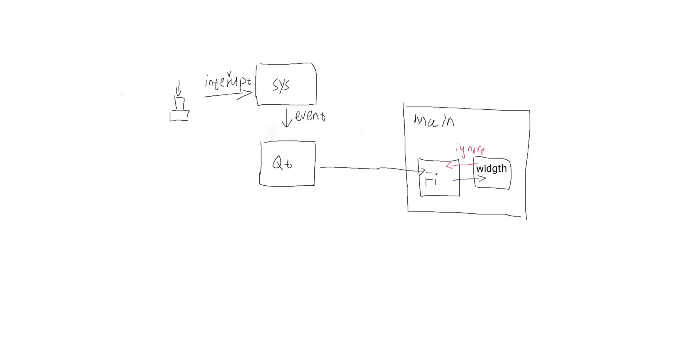
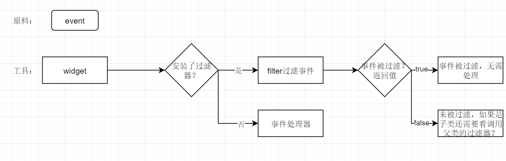
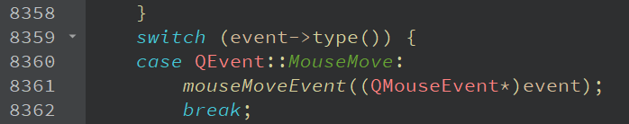
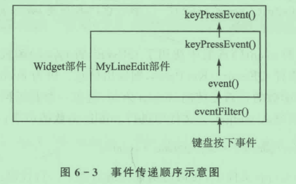

事件系统包含哪几个部分？
事件的处理过程
学习的步骤：了解事件的含义，关联的对象，整个过程中对象的分工。然后从最表面的、直接的对象开始处理具体的事件。一直往上层。
Qt是c++语言编写的界面交互程序，需要通过界面来接收人（主要是鼠标、键盘）的输入。事件就是对应人对界面的操作。如：在界面上操作鼠标将产生鼠标相关事件，当界面获得焦点时按下按键产生按键事件。移动窗口产生重绘事件。
事件系统的组成部分由事件产生-操作系统，事件循环-qt框架，事件处理-qt事件处理机制组成。（这是我自己分的）
以按键输入为例，当一个按键按下时，操作系统获取到了按键按下中断？那么系统会生成一个事件，然后传递给qt框架，qt框架根据事件等级将其放入到事件循环中。
事件循环：系统不断的产生事件，事件按照优先级顺序排成一列，依次处理事件。

控件之间存在父子对象关系，假设有一对父子对象控件，对于要发送给子对象的事件，首先是其父对象接收，在父对象判断、过滤后传递给子对象，如果子对象不处理该事件，那么事件会再次向上传递给父对象。
问：子对象不处理的事件是怎么发送给父对象的？直接发送？它知道自己的父对象。还是再交给应用程序对象，改变接收对象参数？
Qt处理事件分为三个层级，分别由三个对象处理。
1. QApplication a；
如果要使用qt进行界面编程，那么必须在main函数中创建QApplicaton 对象，它负责接收并分发从底层系统传递过来的事件。 a.exec();监听事件（接收事件）， 开启事件循环？
方法：
Void sendEvent(QObject *receiver,QEvent *event); 从事件队列（event queue）中取事件发送给 receiver
Void postEvent（QObject *recevier，QEvent *event); 将发送给receiver的事件放入到事件循环中
Bool notify(QObject *receiver,QEvent *event);?
2. 父对象
接收appliction 发送过来的事件，过滤事件，这里过滤是双向的，从appliction 分发过来的和子对象未处理的 事件的 处理函数 的参数：发送方 是不一样的！
方法：
事件过滤器、事件分发器
3.子对象
传递到这里就是具体的事件了，在事件处理器（函数）中处理事件
具体的事件处理器：
[virtual protected] void QWidget::mousePressEvent(QMouseEvent *event);
鼠标按下事件
自定义控件类中实现虚函数定义
void mouseMoveEvent(QMouseEvent *event)
{
qDebug()<<event->pos();
}
结果：没有坐标输出。
原因：子控件要处理事件必须调用accept（），表示接收并处理了事件，这样事件才不会向父对象传递。 也就是说一个事件 只能由一个控件主动处理。
修改1：
Accept();
QDebug()<<event->pos();
结果：还是没有输出
原因：要在accept（）前处理事件，处理完毕后再accept（）？accept（）具体做一些什么工作？
并不是，前面只不过是因为MainWindow的中心控件被 TextBrowser 占据了，然后鼠标没有按键。
是因为没有按键，qt类的控件不处理事件，他会上传事件到父控件MainWindow
现象：只移动鼠标没有输出，按下鼠标左键后移动鼠标，有坐标输出。
问：所以mouseMove（）只在鼠标按键时才产生？
inline void accept() { m_accept = true; }
inline void ignore() { m_accept = false; }
Accept（）和ignore（）只是设置一下标志属性，没有其他操作。
MouseMoveEvent（）处理的是系统或其父对象发送下来的事件，那么对于它发送给子对象，然后又由子对象发送回来的事件也是在mouseMoveEvent（）中处理？
目前的现象：鼠标在TextBrowser内 按键移动有坐标输出，看来 是发送给TextBrowser的事件上送给了 MainWindow 处理。
问：如果MainWindow 要同一处理其子对象的 鼠标事件，并根据来源做相应的操作，那么就需要知道来源，如何或者事件来源？
I：看了事件过滤器之后，如果要实现上面的父对象对子对象的事件进行控制，那么可以直接在发送给子对象前进行处理，没必要发送过去，再在接收后处理。
事件是由父到子，所以 事件处理的优先级也是父-》子，父对象有权利决定子对象是否要处理该事件。
事件分发器的作用是决定是否在父对象中处理事件-对应是否分发给子对象（事件的目标对象）。
系统参数的事件是有目标对象的，传递过程中可能被处理掉了，导致目标没有收到。如果最后达到了目标对象，但是没有处理，那么类似物流的退货，事件一路返回。
谁来安装事件过滤？父对象安装事件过滤，先到才有的过滤。对经由它的发送给子对象的事件进行过滤
如何过滤？
[virtual] bool QObject::eventFilter(QObject *watched, QEvent *event);
重写eventFilter（）
问：我感觉这样就够了吧，但是还需要对目标对象安装过滤器。。。
void QObject::installEventFilter(QObject *filterObj);
难道父对象不知道要将事件发送给谁？所以需要目标对象安装过滤器？
可以安装多个过滤器（指定多个 filterObj），这些filterObj 是目标对象的父、爷、太爷。。对象。因为 他们都在目标对象前收到事件，所以都可以进行过滤，所以才需要目标对象指定是哪一个层次的父对象来过滤吗？

事件过滤器 是作为一个单独的工具，它可以被安装到任何可以使用事件过滤器的控件上（QObject的子类？）
事件处理器有三种，所有的事件的处理：event（），特定的事件处理 mousePressEvent（）。。；自定义的事件处理
在event（）种调用特定的事件处理器 mousePressEvent（）

在事件过滤时使用自定义事件处理，或重写特定事件处理器、event（）
。。。我好像误会了，event（）是事件分发器，在分发器中调用处理器。。。
QEvent是事件管理类，event（）是其中一个函数，bool QWidget::event(QEvent *event)
函数的参数QEvent *event就是分发的对象了。事件分发器，器-一个工具，把函数当作工具，函数参数就是原料，返回值就是使用工具后的结果。
1.事件的处理过程，事件是直接到达目标对象，如果目标对象不进行处理才向上交给父对象处理，而不是先发送给父对象然后再发送给目标对象。
问：为什么会有理解错误？
答：因为之前看的是霍亚飞的qt快速入门，书中举的例子是在父对象中定义事件过滤器，所以以为事件会先到达父对象，由父对象过滤，然后再发送给子对象。实际上是事件过滤器不一定是由父对象定义。
